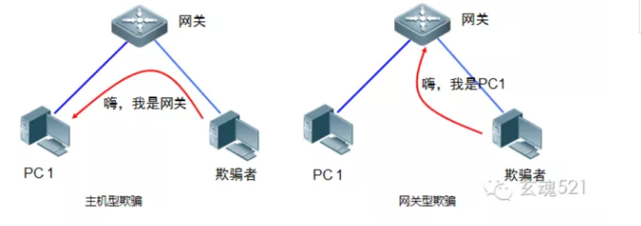
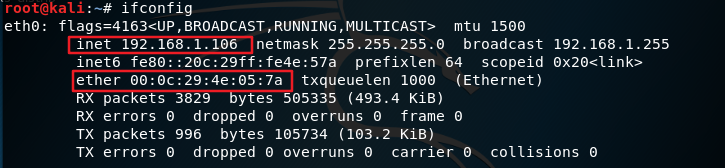
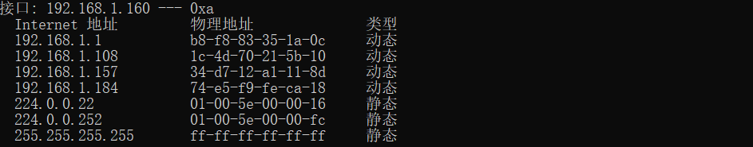
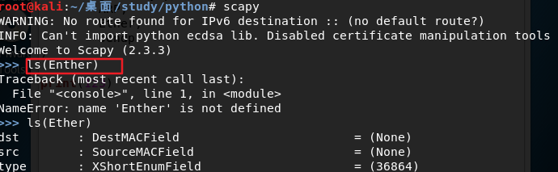
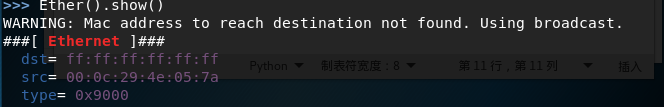

ARP欺骗
ARP介绍
ARP是地址转换协议（Address Resolution Protocol）的英文缩写，它是一个链路层协议，工作在OSI模型的第二层，在本层和硬件接口间进行联系，同时对上层（网络层）提供服务。
二层的以太网交换设备并不能识别32位的IP地址，它们是以48位以太网地址（就是我们常说的MAC地址）传输以太网数据包的。
也就是说，IP数据包在局域网内部传输时并不是靠IP地址而是靠MAC地址来识别目标，因此IP地址与MAC地址之间就必须存在一种对应关系，而ARP协议就是用来确定这种对应关系的协议
ARP工作时，首先请求主机会发送一个含有所有希望到达的IP地址的以太网广播数据包，然后目标IP的所有者会以一个含有IP和MAC地址对的数据包应答请求主机。这样请求主机就能获得要达到的IP地址对应的MAC地址，同时请求主机会将这个地址对放入自己的ARP表缓存起来，以街约不必要的ARP通信。ARP缓存表采用了老化机制，在一段时间内如果表中的某一行没有使用，就会被删除。
APR欺骗原理
局域网上的一台主机，如果接收到一个ARP报文，即使该报文不是该主机所发送的ARP请求的应答报文，该主机也会将ARP报文中的发送者的MAC地址和IP地址更新或加入发哦ARP列表中。
APR欺骗攻击就是利用这点，攻击者主动发送ARP报文，发送者的MAC地址为攻击者主机MAVC地址，发送者的IP地址为被攻击主机的IP地址。通过不断发送这些伪造的ARP报文，让局域网上所有的主机和网关ARP表，其对应的MAC地址均为攻击者的MAC地址，这样所有的网络流量都会发送给攻击者主机。由于ARP欺骗攻击导致了主机和网关的ARP表的不正确，这种情况我们也成为ARP中毒。
根据ARP欺骗者与被欺骗者之间的角色关系不同，通常可以把ARP欺骗攻击分为两种：
- 主机型ARP欺骗： 欺骗者主机冒充网关设备对其他主机进行欺骗
- 网关型ARP欺骗： 欺骗者主机冒充其他主机对网关设备进行欺骗

其实很多时候，都是进行双向欺骗，既欺骗主机又欺骗网关。
基本信息网络信息
kali linux的网络配置和ARP缓存


如图，kali linux 以太网卡为eth0，ip地址：192.168.1.106，MAC地址：00:0c:29:4e:05:7a
同样方法查看windows系统的信息

构造ARP欺骗数据包
攻击机：192.168.1.106
目标靶机：192.168.1.160
首先导入scapy1
2
3
4
5
6
7
8
9import sys
import time
from scapy.all import (
get_if_hwaddr,
getmacbyip,
ARP,
Ether,
sendp
)
get_if_hwaddr 为获取本机网络接口的函数getmacbyip 是通过ip地址获取其Mac地址的方法ARP 是构建ARP数据包的类Ether 用来构建以太网数据包sendp 方法在第二层发送数据包
- Ether 参数

构造一个以太网数据包通常需要指定目标和源MAC地址，如果不指定默认发出的就是广播包，例如：

- ARP类构造函数的参数列表

注意：
- op — 取值为1或者为2，代表ARP请求或响应包
- hwsrc — 发送方MAC地址
- psrc — 发送方IP地址
- hwdst — 目标MAC地址
- pdst — 目标IP地址
定向欺骗
告诉目标主机1.160